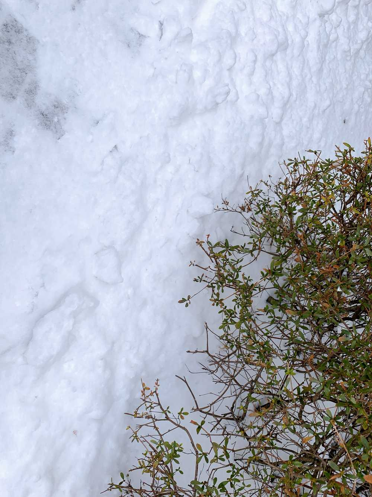

早く18時にならないかな〜😗
ひいだよ🍓

外に出たら結構積もってました❄️
めっちゃ寒いです🥶
そして今日も家の前に
雪だるまがいましたよ⛄️笑
昨日とは違う子でした🥺
でも時間なくて写真撮れなかった😢
今さっき
「ひぃといずおん」の収録をしました😳
やっぱり私はマイクの前に座って
お話するのが好きだなって
改めて実感しました😌
そして皆さんから頂いたメッセージも
全て読ませていただきました！
番組は15分と時間が限られているので
少ししか紹介はできませんでしたが😢
とても嬉しかったです！
たくさんの方の応援、サポートのおかげで
こうして番組をすることができています。
いつも聴いてくださる皆さん、
FM栃木さん、栃木トヨタさん
本当にありがとうございます😊
2月20日の放送
楽しみにしててください😇
そういえば昨日ね
マネージャーさんがパンを買ってきてくれたの🥺🥺
마늘빵（マヌルパン）
日本でいうガーリックパン🥐
焼き立てでと〜ってもいい香りで
みんなもすごい美味しいって言ってたから
ひいも食べたかったんだけど。。
最近ニンニクを食べるとお腹が痛くなることが
判明いたしまして…😭笑
だからすごく食べたかったけど
我慢しました😑💬
最近はニンニク料理控えてます…😢
この前ニンニク多めのキムチ食べたときも
ダメでした…笑
お腹強くする方法ってありますか？？笑
それじゃあまたっ🙋♀️
어제 매니저님이 마늘빵을 사주셨어요!!
저도 먹고싶었는데 요즘 마늘을 먹으면 배가 아파져서 많이 못 먹어요ㅜㅜ
그래서 그냥 멤버들이 먹고있는 모습을 보고있었어요😢ㅎㅎㅎ
이호가 가장 좋아하는 빵이 뭘까요 🤔??
저는... 베이글도 좋고 슈크림빵도 좋고...
고를 수 없어요🤧
근데 겨울이라면 역시 호빵이죠!?
이번 겨울은 아직 한번도 안 먹었어요ㅜㅜ
이호는(은)어떤 호빵을 좋아해요??
단호박크림치즈호빵이 있다고 들었는데
먹어본적이 있는 사람~🤗
너무 먹고싶다ㅠ
그리고 오늘 라디오 녹음을 했어요!!
많은 메시지를 보내주셔서 정말 감사합니다ㅜㅜ
20일날 꼭 들어주세요🥰
아... 6시까지 어떻게 기다리면 돼요!?
너무 떨려요😳ㅎㅎㅎ
すっぴん写真🤳
ひいめーるだけで公開🤗
ばいばーい👋
ひいまる🥟